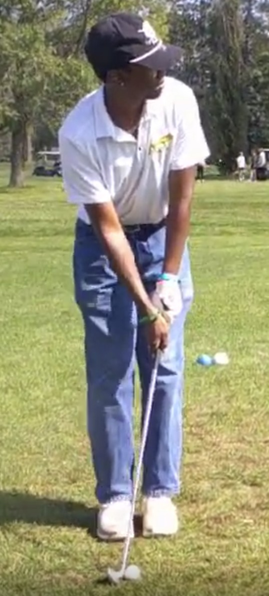
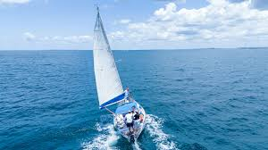
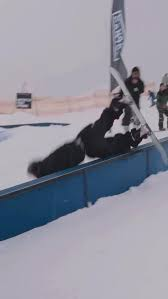

A closer look at the activities that keep me active, grounded, and constantly learning.

Golfing
I’ve been golfing for about 5 years, and I hover around an
15 handicap. Golf forces me to slow down, let my mind go and really settle into the moment.
My short game is definitely stronger than my long game.
I just have a touch when it comes inside 100 yards that I don't have with longer distances
Golf has taught me how to really not get the best of myself, especially when things aren’t going my way.

Sailing
Reading the wind, yelling, and trust me theres a lot of yelling
Sailing isn't something I get to do as often as I like unfortunately, but when I do, it’s an incredible experience.
I've been sailing for about 3 years now, mostly on Lake Minnetonka with Wyzeta Yacht Club.
You get 3 free races a year as a guest, but they only start charging after the 6th on usually.
Sailing is a team sport that requires constant communication and quick thinking.
Everyone has a role to play and an impact on how their crew performs.
This hobby has helped me become more poised under pressure and better at collaborating with others toward a common goal.
It has also given me a great appreciation for boats, lakes and the abillity to tread water

Snowboarding
Shredding, falling, and a three year streak of no concussions!
I’ve been snowboarding for about 5 years. I love flying down slopes, flying through side hits and aspire to finally improve in the terrain park.
I usually go to Spirit Mountain, or Chester Park when I have a few free hours during the winter months.
Snowboarding is a mix of a great mental reset and genuinely terrifying physical activity.
It forces me to be present, adapt to changing conditions, and push through fear.
It’s also taught me a lot about repetition and progress. You don’t land something new on
the first try, and that mindset helps me stay patient when I’m learning new tools or working
through a tough technical problem.

Hiking
Exploring, Getting lost, finding my way, getting lost again.
Hiking is one of the simplest but most rewarding hobbies I have. I really got into hiking this summer, due to backpacking.
The actual act of hiking is something I find really comforting and peaceful. It has a rhythm that helps me focus and enjoy the outdoors.
I like trails that mix elevation, scenery, and a bit of challenge. There’s something
satisfying about reaching a lookout, taking a breather, and realizing how far you’ve come
without really noticing it step-by-step.
Hiking helps me reset mentally and come back more focused. It’s a reminder that progress
can be steady and quiet—but still meaningful, whether that’s in school, work, or personal goals.